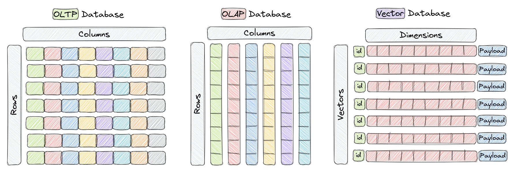
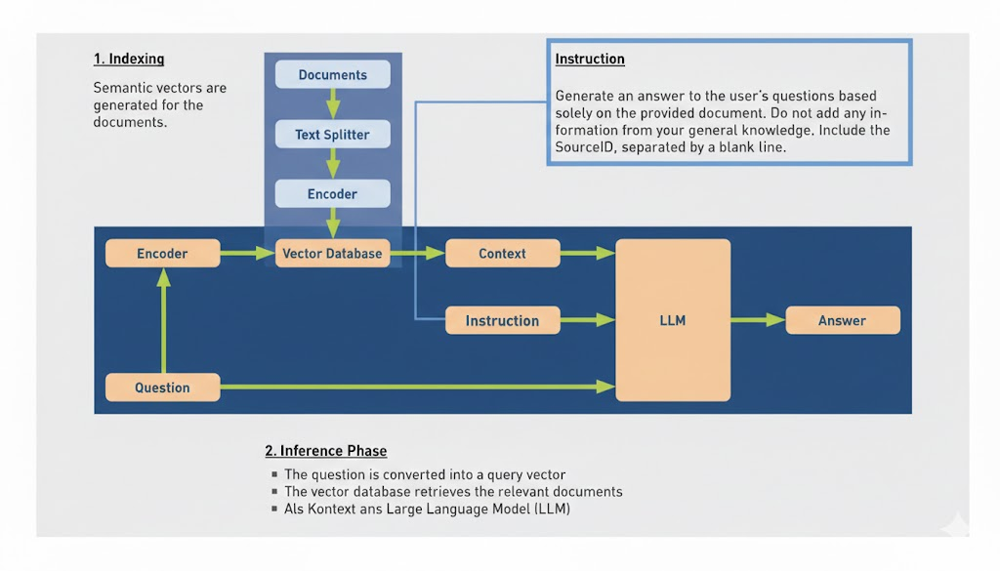
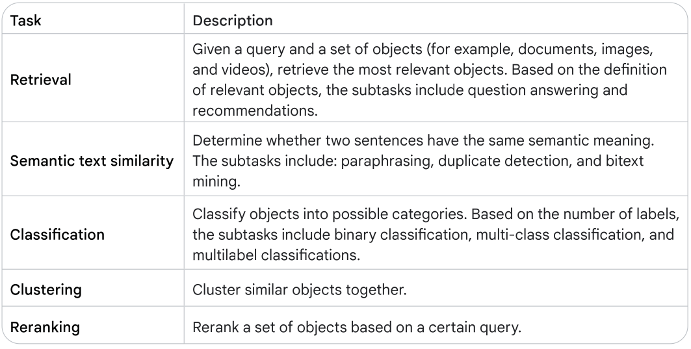

Day 2: Vector Stores
Module Overview
Session: Vector Stores
Session: Vector Stores
What You’ll Learn Today
By the end of this session, you will:
- Understand vector search algorithms and trade-offs
- Know how to choose and deploy vector databases
- Build RAG applications with embeddings and vector stores
Vector Search
The Nearest Neighbor Problem
Finding similar vectors at scale
- Exact search: Brute force, too slow for large datasets
- Approximate search: Trade accuracy for speed
- Scale: Billions of vectors, milliseconds response time
Important Vector Search Algorithms
Speed vs. accuracy trade-offs
- LSH: Locality Sensitive Hashing
- HNSW: Hierarchical Navigable Small Worlds
- ScaNN: Google’s optimized ANN algorithm
Vector Databases
Vector databases
| Type | Optimized For | Storage | Best Use Case |
|---|---|---|---|
| OLTP | Writing & Single-Row Reads | Row-store | “User management, E-commerce orders” |
| OLAP | Reading & Aggregation | Column-store | “Business Intelligence, Data Warehousing” |
| Vector | Semantic Proximity | Embeddings | “AI Search, Recommendation Engines” |
Popular Vector Databases
Options for different needs
- Pinecone: Fully managed, easy to use
- Weaviate: Open source, self-hosted
- ChromaDB: Lightweight, Python-first
- pgvector: PostgreSQL extension
- Vertex AI: Google Cloud’s managed service
Operational Considerations
Production deployment factors
- Scalability: Handle growing datasets
- Latency: Response time requirements
- Consistency: Update and synchronization
- Cost: Storage and compute costs
Applications
Retrieval Augmented Generation (RAG)
Combining retrieval with generation
- Problem: LLMs have limited, static knowledge
- Solution: Retrieve relevant context, then generate
- Result: Up-to-date, source-attributed responses
In Detail:
- Indexing: Embed documents, store in vector database
- Query: Embed user query
- Retrieval: Find similar documents
- Generation: LLM generates response from context
RAG Architecture
Detailed RAG architecture showing indexing, querying, retrieval, and generation steps
Other Applications
Beyond RAG: Retrieval, Semantic text similarity, Classification, Clustering, Reranking
Summary
Key Takeaways
- Different types of embeddings for different data types
- Evaluation is crucial for ensuring quality
- Vector search algorithms trade accuracy for speed
- Vector databases are essential for production systems
- RAG combines retrieval with generation